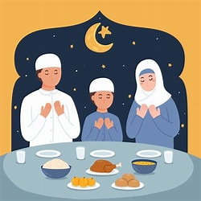

أركان الاسلام
الصيام رابع أركان الإسلام الخمسة، وقصد به صيام شهر رمضان من كل عام، ولا يدخل فيه صيام النوافل، ويُعرّف الصّيام؛ بأنّه الإمساك عن جميع المُفطرات من الفجر الصادق إلى غروب الشمس؛ بقصد التقرّب إلى الله وطاعته، والتزام أمره -سبحانه- وتعالى. ولا يُعدّ العبد مُحقّقاً لحقيقة الصيام إلّا إذا ترك وأمسك عن جميع المفطرات الحسيّة والمعنويّة؛ فالمُفطرات الحسيّة هي الأكل والشّرب، والمُفطرات المعنويّة هي الأفعال والأمور المُنقِصة لأجر الصّائم من الذّنوب؛ فيُمسك عن ارتكاب الذنوب والمعاصي والمُنكَرات، فيبتعد عن الخصام والرّفث، وبما أنّ الصّوم ركنٌ من أركان الإسلام فهو فرضٌ على كل مسلمٍ ومسلمةٍ بشرط أهليّة التّكليف.
